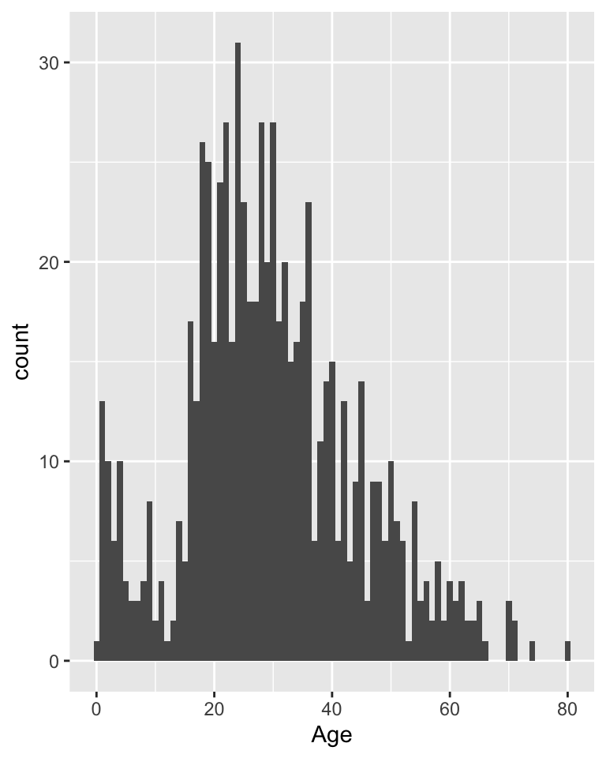

Cours 2 Statistique descriptive univariée
Le cours précédent était consacré à vous présenter différents types de variables. Celui de cette semaine présente les premiers éléments de statistique descriptive univariée, les outils permettant la description d’une unique variable. Ces outils dépendent de la nature de la variable étudiée.
2.1 Variables qualitatives
2.1.1 Tris à plat
Pour décrire ce genre de variable, le principal traitement statistique est de compter le nombre d’individus correspondant à chaque modalité de la variable. C’est ce qu’on appelle un tri à plat (par opposition aux tris croisés qui font intervenir plusieurs variables). Un exemple issu des données du titanic @ref(bases-de-données).
2.1.2 Variables qualitatives ordinales
Pour ce genre de variables, on peut ajouter au tri à plat le “pourcentage cumulé.”
2.1.3 Représentation graphique

2.2 Mesures de dispersion
2.2.1 Measures of dispersion
La semaine dernière, je vous ai présenté quelques mesures de tendance centrale. Elles donnent des renseignements importants pour décrire une variable, mais n’en résument qu’une dimension. Deux séries statistiques peuvent avoir la même moyenne tout en étant très différentes.
Comparez par exemple ces deux séries de chiffres, qui représentent des profits (fictifs) en dollars de deux agriculteurs de deux régions A et B :
- A: 14, 16, 18, 20, and 22
- B: 2, 8, 18, 29, and 33
2.2.2 Mesures de dispersion
La somme de ces deux série est la même, 90 dollars, mais il apparaît rapidement que l’une des séries est beaucoup plus dispersée que l’autre, c’est-à-dire que les écarts par rapport à la moyenne sont en général beaucoup plus grands (la série B). Notre vision des risques et des profits liés à l’agriculture dans est informée de cette différence, et nous devrions en inclure des indices dans toute description statistique de cette variable.
Pour faire cela, nous avons besoin de mesures permettant de décrire la disperion des modalités de la variable autour de sa moyenne. Toutes ces mesures n’existent que pour deq variables quantitatives.
2.2.3 L’étendue
C’est la différence entre la plus grande et la plus petite valeur de la série :
\[R = X_{max} - X_{min}\]
C’est une mesure de dispersion assez basique.
2.2.4 L’écart interquartile
Plutôt que de calculer la différence entre le maximum et le minimum, on peut calculer la différence entre deux quantiles, des quartiles par exemple (rappel de la définition ?).
\[ Q_d = Q_3 - Q_1 \]
C’est un mesure un peu meilleure que l’étendue, parce que le maximum et le minimum sont des valeurs qui donnent généralement peu d’information sur la distribution en général.
2.2.5 La variance
La variance est égale à la moyenne arithmétique des écarts à la moyenne au carré. C’est une manière de mesurer un écart moyen à la moyenne.
\[ s^2 = \frac{1}{n} \sum_{i = 1}^{n} (X_i - X_m)^2 \]
2.2.6 L’écart type
\[ \sigma = \sqrt{\frac{1}{n} \sum_{i = 1}^{n} (X_i - X_m)^2} \]
L’écart-type est la mesure de dispersion la plus utile et la plus fréquente. Elle est meilleure que la variance car elle se mesure dans la même unité que la variable en question (tandis que la variance se mesure dans l’unité de la variable au carré). Par exemple, on peut dire que dans la région A, la moyenne des revenus agricoles est de 18 dollars, avec un écart-type de 2,8 dollars.
2.2.7 La moyenne pondérée (rajout à la liste des mesures de tendance centrale de la semaine dernière)
\[ Age_m = \frac{1}{n} \sum_{j} n_j*Age_j \] où \(Age_j\) est la moyenne de la \(j^{ième}\) catégorie.
2.3 Distributions
2.3.1 Histogrammes
Les histogrammes sont l’équivalent des diagrammes en barres pour les variables quantitatives. Chaque barre (ou rectangle) qui compose l’histogramme a une aire qui est proportionnelle au nombre d’observation dont les valeurs sont dans l’intervalle sur lequel s’étend le rectangle.
## `stat_bin()` using `bins = 30`. Pick better value with `binwidth`.## Warning: Removed 177 rows containing non-finite values (stat_bin).2.3.2 Histogrammes
Comme il s’agit de variables quantitatives, on peut choisir le nombre de rectangles comme on le souhaite. Ici, on représente la même variable avec moins de rectangles.

2.3.3 Histogrammes
Ici avec un plus grand nombre de rectangle (largeur = 1 an)
2.3.4 Polygone de fréquence
On peut tracer une ligne qui passe au milieu de chacun des segments supérieurs des rectangles qui composent l’histogramme, on appelle ce graph un polygone de fréquence.
Per capita relief payments in 311 parishes in 1831 (Fenstein & Thomas, p. 41)
2.3.5 Densité
La forme de ce polygone peut être être “lissée” à l’aide de techniques mathématiques, pour donner ce qu’on appelle une courbe de densité. Elle donne une idée de la forme du polygon de fréquence si l’on avait un très grand nombre d’individu dans notre échantillon.

D’un histogramme à une densité de probabilité
2.3.6 Distributions
Ces représentations graphiques sont un bon moyen de visualiser la forme de la distribution d’une variable quantitative continue, et spécifiquement de la manière dont les données sont réparties autour de leur valeur “centrale.” Elles peuvent être réparties symétriquement ou bien de manière asymétrique.
2.3.7 Distributions
Symmetrical and skewed distributions (Fenstein & Thomas, p. 54)
2.3.8 Mesure de l’asymétrie (skewness)
- Elles doivent être indépendantes de l’unité de mesure
- Et elle doivent être nulles lorsque la distribution est symétrique.
Un exemple de coefficient d’asymétrie est le suivant, mais il en existe d’autres :
\[ Skewness = \frac{3*(Mean - Median)}{\sigma} \]
2.3.9 La loi normale
C’est une distribution théorique qui correspondant un nombre de cas infini. Bien que théorique, c’est une distribution très utilisée comme approximation de distributions réelles.
2.3.10 La loi normale
La coubre de la loi normale implique deux constantes : la moyenne \(X_m\) et l’écart type \(\sigma\). L’équation donne la valeur de Y (la hauteur de la courbe, qui apparaît sur l’axe des ordonnées) pour tout valeru de X (mesuré sur l’axe des abscisses).
\[ Y = \frac{1}{ \sigma \sqrt{2\pi}} exp(- \frac{(X - X_m)^2}{2*\sigma^2})\]
2.3.11 Dispersion de la loi normale
Une propriété importante de la loi normale est que, quelque soit sa moyenne et son écart-type, il y a toujours une même proportion d’observation qui seront distribués à une certaine distance de la moyenne, mesurée en nombre d’écarts-type.
Par exemple :
- 90% des observations sont situés à moins de 1,645 écarts-type autour de la moyenne, laissant 5% de chaque côté.
- 95% des observations sont situés à moins de 1,96 écarts-type autour de la moyenne, laissant 2,5% de chaque côté.
- 99% des observations sont situés à moins de 2,58 écarts-type autour de la moyenne, laissant 0,5% de chaque côté.
2.3.12 Dispersion de la loi normale

Aire sous la courbe